Dreamzone: to'liq rasmli qo'llanma
Sayt qanday ishlashi va har bir rol nima qilishi, qadamma-qadam, haqiqiy ekran rasmlari bilan. Qizil raqamlar rasmdagi bosiladigan joyni bildiradi.
Tizim qanday ishlaydi
To'rtta rol bor: admin, resepshn, o'qituvchi va o'quvchi. Asosiy yo'l:
- Saralash testi: yangi o'quvchi darajasini aniqlaydi. Har bir daraja uchun bitta test bor (Elementary, Pre-Intermediate, Intermediate, Pre-IELTS). Natijaga qarab tizim bir daraja pastroq yoki yuqoriroq testni taklif qilishi mumkin.
- Darajani oshirish imtihoni: hozirgi o'quvchi keyingi darajaga o'tish uchun topshiradi. O'tgan bo'lsa ham, daraja o'qituvchi tasdiqlagandan keyingina oshadi.
- Har bir imtihon faqat bir marta topshiriladi. Qayta topshirish yo'q. Sahifa yangilansa yoki internet uzilsa, o'quvchi xuddi shu imtihonni qolgan vaqt bilan davom ettiradi. Vaqt tugasa, imtihon o'zi topshiriladi.
| Rol | Nima qiladi | Demo login |
|---|---|---|
| Admin | Hamma narsa: foydalanuvchilar, darajalar, guruhlar, imtihon va savollar, natijalar | admin / Admin12345! |
| Resepshn | Yangi o'quvchiga saralash testini o'tkazadi | reception / Demo12345! |
| O'qituvchi | O'z guruhlari va o'quvchilari, imtihon biriktirish, darajani tasdiqlash | teacher / Demo12345! |
| O'quvchi | Imtihon topshiradi, natijani ko'radi | student / Demo12345! |
Kirish
Saytni oching, login va parolni yozing, Kirish ni bosing. Yangi o'quvchi o'zi ham ro'yxatdan o'ta oladi.
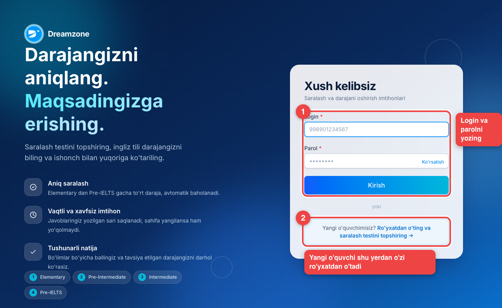
Admin: boshlang'ich sozlash (bir marta)
1 O'qituvchilarni qo'shing
O'qituvchilar bo'limi → + O'qituvchi qo'shish. Ism, telefon, login va parol kiritiladi. Jadvalda har bir o'qituvchining guruhlari, o'quvchilari va imtihonlari soni ko'rinadi.
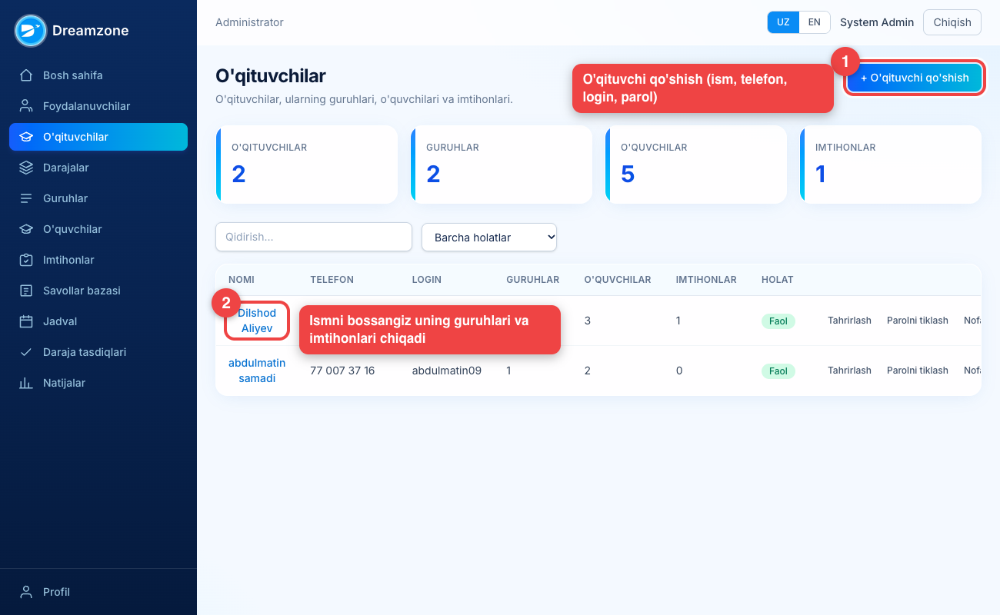
2 Darajalar va saralash testi
Tizimda 4 daraja bor: Elementary, Pre-Intermediate, Intermediate, Pre-IELTS. Har birining saralash testi bor. Savollarini va chegaralarini «Sozlash» orqali o'zgartirasiz.
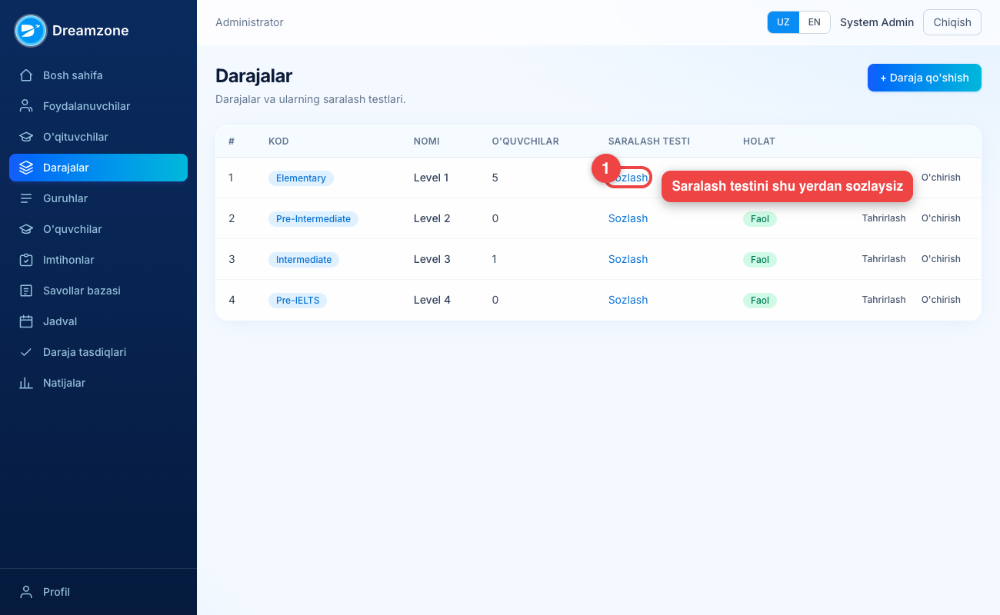
3 Guruhlarni yarating
Guruhlar → + Guruh qo'shish: nom, daraja va o'qituvchini tanlang. A'zolar orqali o'quvchilarni qo'shasiz.
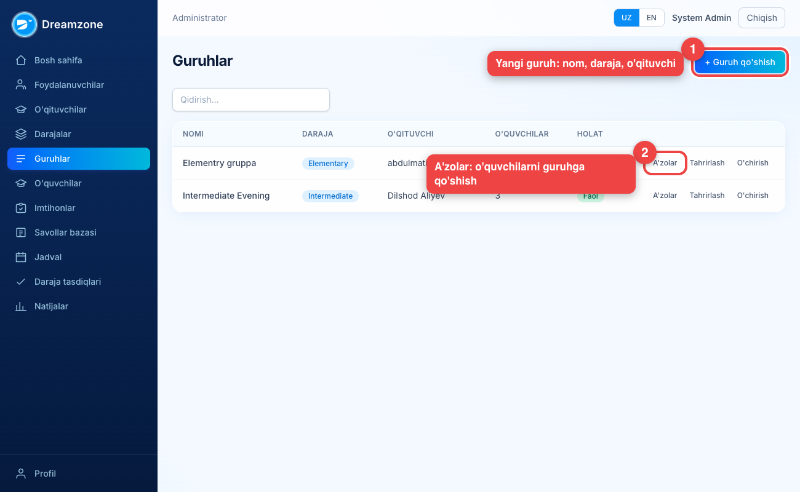
4 Imtihon yarating
Imtihonlar → + Imtihon yaratish. Avval turini tanlang:
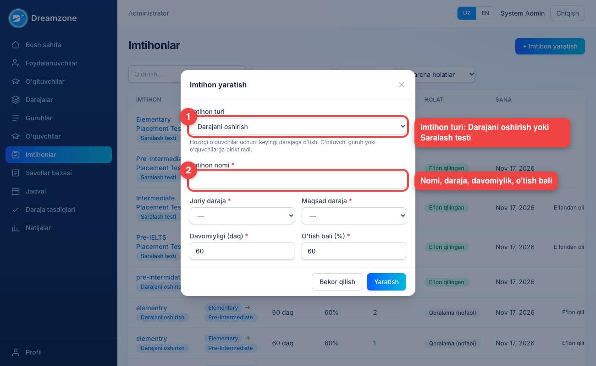
- Darajani oshirish: joriy va maqsad daraja kerak. O'qituvchi guruhlarga biriktiradi.
- Saralash testi: faqat admin yaratadi, har bir daraja uchun bittadan. Allaqachon bor, shuning uchun odatda uning savollarini o'zgartirasiz.
Keyin variant yarating (A, B…), savollarni joylang (pastdagi bo'lim) va imtihonni E'lon qilish tugmasi bilan yoqing. E'lon qilinmagan imtihon hech kimga biriktirilmaydi.
5 Imtihonni o'qituvchiga bering
Imtihonni admin yaratgan bo'lsa, o'qituvchi uni avtomatik ko'rmaydi. Imtihon → Sozlamalar tabi → «Kirish huquqi bor o'qituvchilar» → o'qituvchini belgilab Saqlash. O'qituvchi o'zi yaratgan imtihonni doim ko'radi.
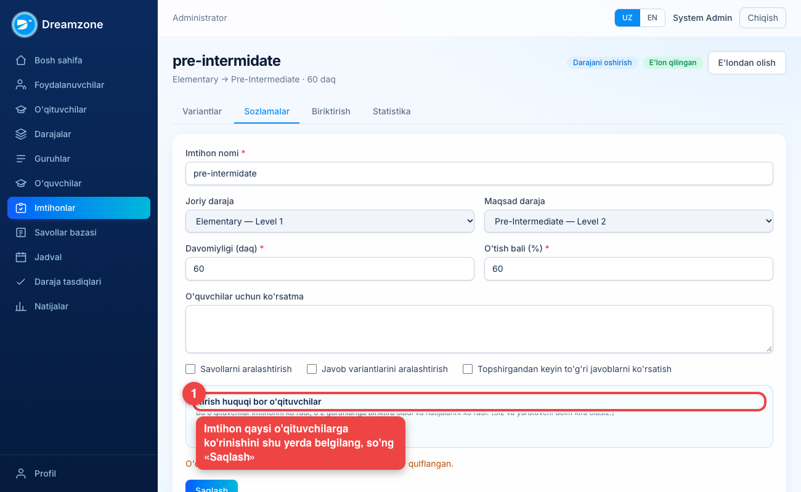
6 Natijalar va hisobotlar
Natijalar sahifasida barcha imtihon natijalari. Daraja, o'qituvchi, sana va holat bo'yicha filtrlash, Excel va PDF ga yuklab olish mumkin. Natijani bossangiz, bo'limlar bo'yicha ball va har bir savol ko'rinadi.
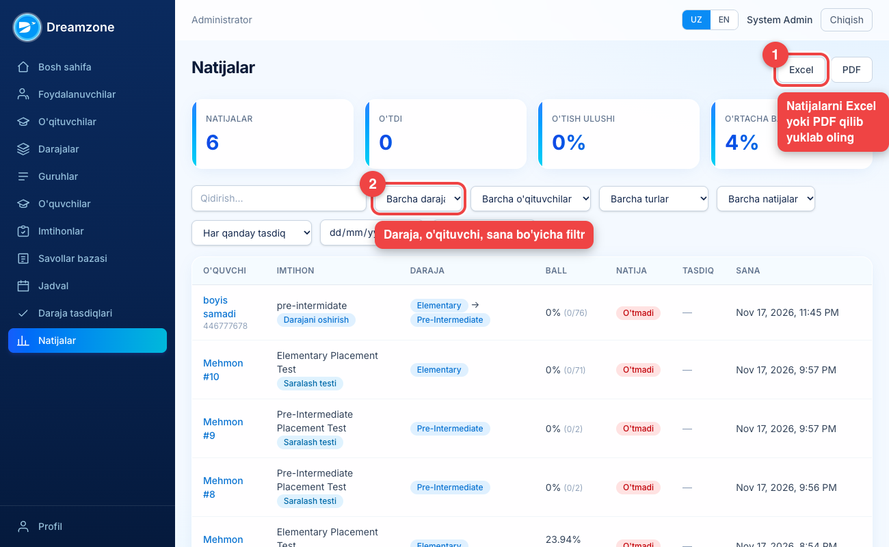
Savollarni imtihonga joylash
Testni PDF yoki Word'dan nusxalab tashlaysiz, javoblarni alohida yozasiz. Tizim o'zi savollarga ajratadi.
1 Imtihonni oching
Imtihonlar bo'limiga kiring va kerakli imtihon nomini bosing. Saralash testi ro'yxatning eng tepasida turadi.
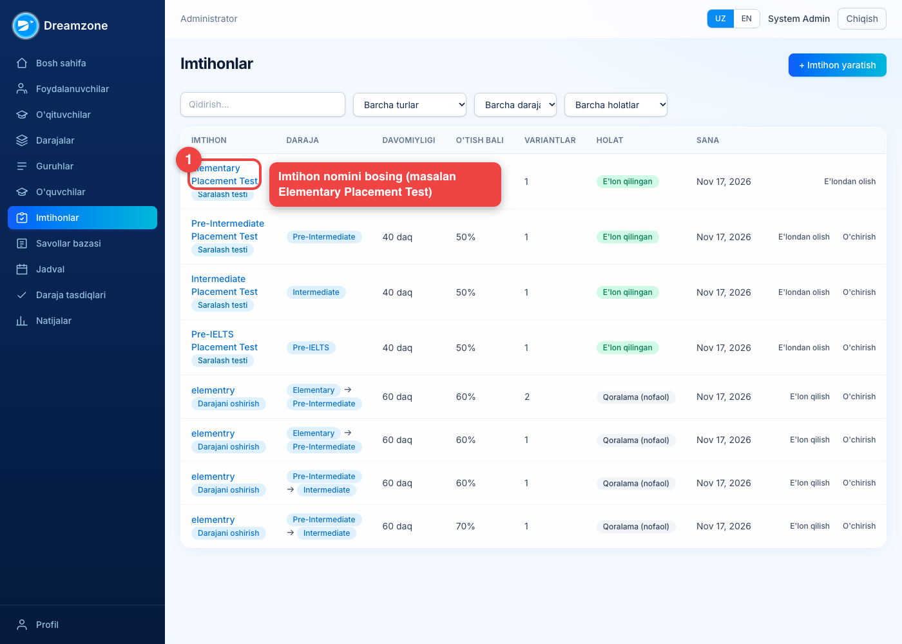
2 «📋 Matn tashlash» tugmasini bosing
Imtihon sahifasida Variantlar tabini oching. Variant kartasining (masalan «Variant A») o'ng tepasida shu tugma turadi.
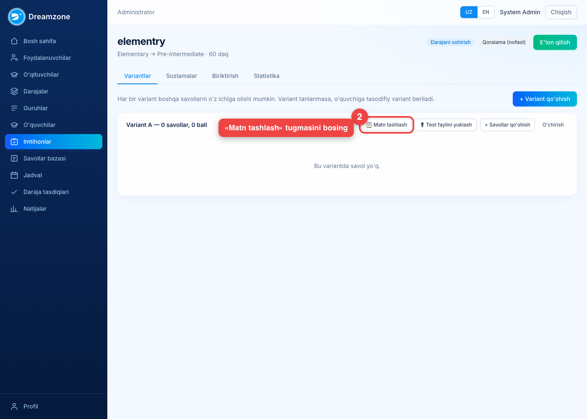
3 Chapga test, o'ngga javoblar
Ochilgan oynada ikkita katak bor. Chapga testni xuddi PDF'dagidek nusxalab tashlang. O'ngga javoblarni yozing.
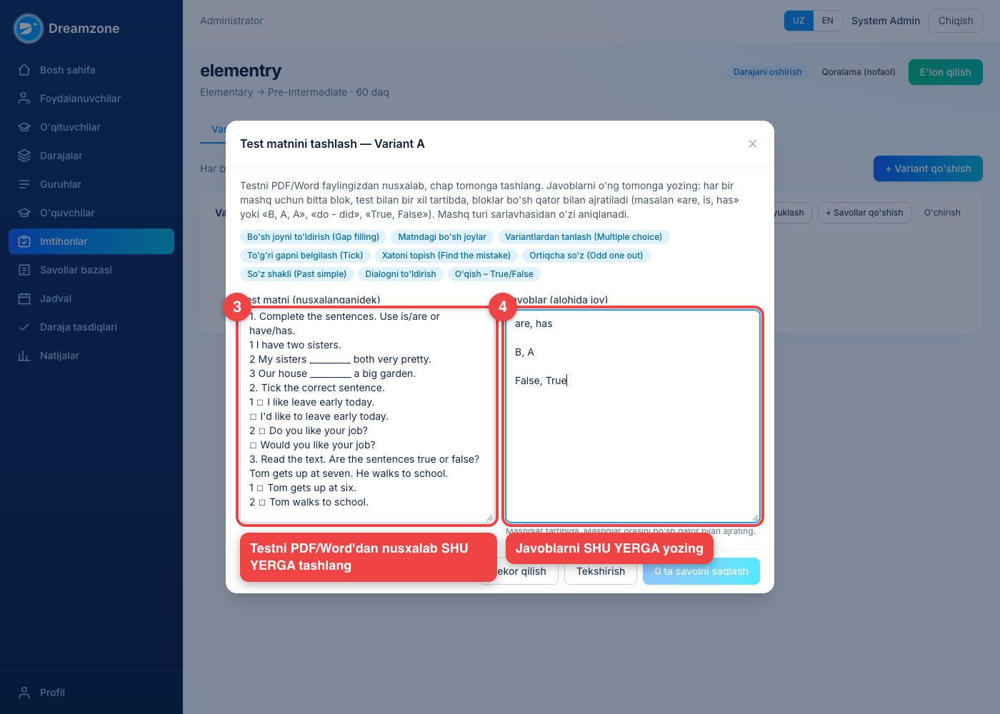
★ Javoblar testga qanday mos tushadi?
Testdagi har bir mashq (1., 2., 3. sarlavhali bo'lim) uchun javoblarda bitta blok yoziladi. Bloklar bo'sh qator bilan ajratiladi va shu tartibda bo'ladi. Rang bir xil bo'lsa, ular bir-biriga mos:
Chap katak (test)
1. Complete the sentences. 1 I have two sisters. 2 My sisters ______ both pretty. 3 Our house ______ a big garden.
2. Tick the correct sentence. 1 ☐ I like leave early today. ☐ I'd like to leave early today. 2 ☐ Do you like your job? ☐ Would you like your job?
3. Read the text. True or false? Tom gets up at seven. 1 ☐ Tom gets up at six. 2 ☐ Tom walks to school.
O'ng katak (javoblar)
are, has
B, A
False, True
Nimaga e'tibor bering:
- 1-mashq javobi
are, has, chunki bo'sh joyli 2 va 3-gaplar bor. - «1 I have two sisters.» bo'sh joyi yo'q, bu namuna. U o'tkazib yuboriladi va javob yozmaysiz.
- Tick mashqida
B= ikkinchi gap to'g'ri,A= birinchi.
5 «Tekshirish» ni bosing
Tizim hech narsani saqlamasdan, nimani qanday tanigani ko'rsatadi: mashq turi, har bir savol va uning javobi.
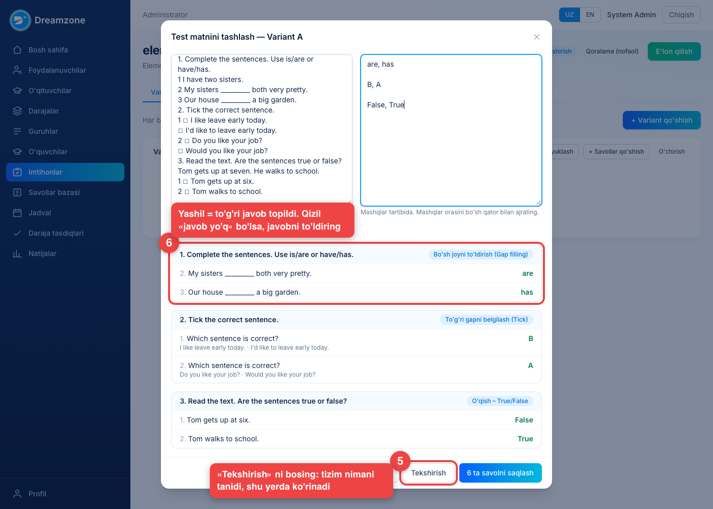
7 Saqlash
Hammasi to'g'ri bo'lsa, shu tugmani bosing. Savollar imtihonning shu variantiga qo'shiladi.
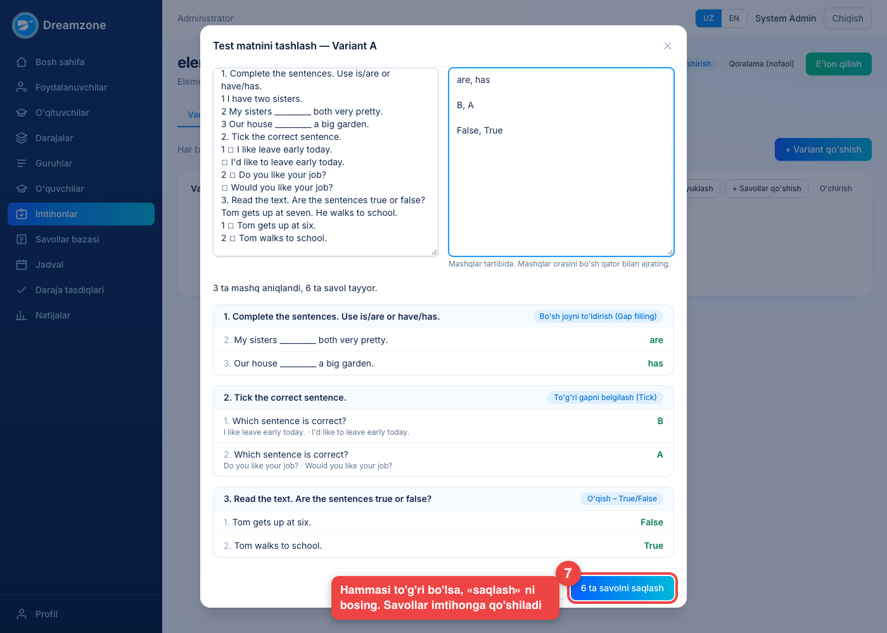
📖 Reading (o'qish matni) qanday joylanadi
Matn mashq sarlavhasidan keyin, birinchi savoldan oldin turadi. Tizim uni o'zi ajratib, shu mashqning hamma savoliga bitta umumiy matn qilib biriktiradi. Imtihonda matn chapda, savollar o'ngda chiqadi.
1) True / False / No information
Chap katak (test)
9. Read the text. Are the sentences true, false or no information? SLEEP AND MEMORY For a long time, scientists believed that the brain simply rested during sleep. ... 1 ☐ Scientists have always known the brain is active. 2 ☐ The students learned the words in the evening. 3 ☐ The students who stayed awake were paid.
O'ng katak (javoblar)
False, True, NG
NG = No information / Not given. Shunda 3 ta tugma chiqadi: TRUE · FALSE · NO INFORMATION. Faqat True/False bo'lsa, 2 ta tugma.
2) Matn va A / B / C savollar
Chap katak (test)
1. Read the text and choose the correct answer. SLEEP AND MEMORY For a long time, scientists believed that the brain simply rested during sleep. ... 1 What did scientists believe? A) The brain rests during sleep. B) The brain is very active. C) The brain stops working. 2 What does the brain do at night? A) It forgets the day. B) It replays information. C) It makes new words.
O'ng katak (javoblar)
A, B
Sarlavhada choose so'zi bo'lsin. Matn kamida ~20 so'zdan iborat bo'lsa, tizim uni "o'qish matni" deb oladi.
3) Matn ichida bo'sh joylar
Chap katak (test)
1. live come speak have eat swim THE BEST SWIMMER IN THE WORLD 'I (1) come from Baltimore, USA. I (2) ______ two sisters. I still (3) ______ in Baltimore.
O'ng katak (javoblar)
have, live
(1) come kabi allaqachon to'ldirilgan joy namuna, u savol bo'lmaydi. Javoblarni faqat bo'sh joylar uchun yozing (yoki namunani ham birinchi qilib yozsangiz bo'ladi).
THE BEST SWIMMER…, HOME, TRAINING) bosh harflar bilan yozilsa, imtihonda alohida sarlavha bo'lib chiqadi. Matn PDF'da qatorlarga bo'lingan bo'lsa ham, tizim ularni bitta paragrafga birlashtiradi.4) Matn va savollarga yozma javob (Answer the questions)
Chap katak (test)
1. Read the text and answer the questions. Isambard Brunel Isambard Brunel was a great engineer. ... Example: What was his job? He was an engineer. 1 Where was Brunel from? ________ 2 What was his father's job? ________ Read the text again and tick True or False. Brunel's mother was French. Brunel spoke two languages.
O'ng katak (javoblar)
England An engineer False, True
Birinchi mashq: har bir javob alohida qatorda. Ikkinchi mashq (True/False) raqamsiz yozilgan bo'lsa ham taniladi va u oldingi mashqning matniga ulanadi ("the text again").
| bilan ajrating: An engineer | He was an engineer.Mashq turini tizim qanday biladi?
Mashq sarlavhasidagi so'zdan. Sarlavha raqam. ko'rsatma ko'rinishida bo'lishi kerak (masalan 4. Tick the correct sentence.).
| Sarlavhada shu so'z bo'lsa | Mashq turi | Javob qanday yoziladi |
|---|---|---|
tick | To'g'ri gapni belgilash | B, A, A |
mistake | Xatoni topish | to'g'ri gapning o'zi |
odd one | Ortiqcha so'z | bridge, waiter |
past simple | So'z shakli | do - did (har biri alohida qatorda) |
conversation / question words | Dialogni to'ldirish | where, when, who |
listen | Tinglash (audio bilan) | mashq shakliga qarab: A, B / seven; audio faylni oynada tanlang |
Writing, Write an email/essay… | Yozma ish | javob kerak emas: o'qituvchi ball qo'yadi |
true va false | O'qish: True/False | False, True, NG (NG = No information) |
gaps | Matn ichidagi bo'sh joylar | harvesting, area |
choose the correct | Variantlardan tanlash | A, C, B |
| boshqa (bo'sh joyli gaplar) | Bo'sh joyni to'ldirish | are, is, has |
is | 's. Savolning o'ziga raqam bilan javob ham yozish mumkin: 2 are.Listening (tinglash) va Writing (yozma ish)
🎧 Listening qanday joylanadi
Tinglash mashqi uchun audio fayl kerak. Matn tashlash oynasida pastdagi «🎧 Audio fayl» maydoniga yozuvni tanlang. Sarlavhasida Listen so'zi bo'lgan har bir mashqqa shu bitta yozuv biriktiriladi. Savollar odatdagidek (A/B/C, bo'sh joy, True/False) yoziladi.
Chap katak (test)
1. Listen and choose the correct answer. 1 Where does Tom live? A) In London B) In Leeds 2 What time does he get up? A) At six B) At seven 2. Listen and complete the sentences. 1 Tom gets up at ________ o'clock.
O'ng katak (javoblar)
A, B seven
Audio fayl maydoniga .mp3 tanlang. "Tekshirish" da audio tanlanmagan bo'lsa, savollar yonida «audio kerak» deb chiqadi.
O'quvchi imtihonda mashq tepasida bitta pleyer ko'radi, yozuvni xohlagancha tinglay oladi:
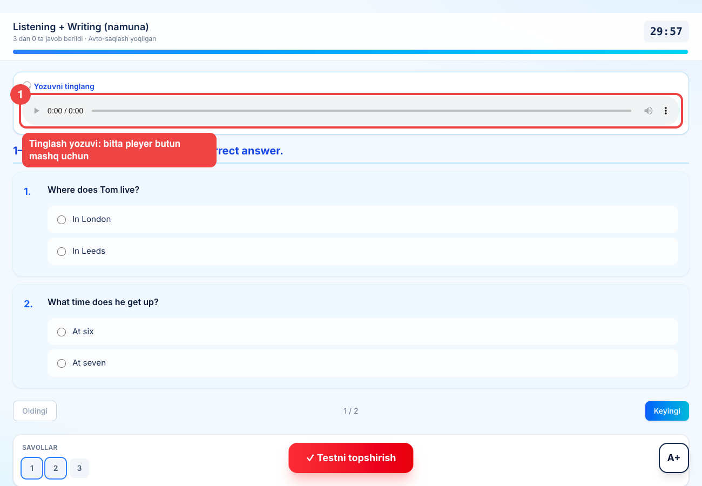
✍️ Writing qanday joylanadi
Yozma ish avtomatik baholanmaydi: o'quvchi yozadi, o'qituvchi ball qo'yadi. Matn tashlashda sarlavhada Writing yoki Write an email / letter / essay / paragraph… bo'lsa, tizim uni yozma topshiriq deb taniydi. Javob kaliti kerak emas.
Chap katak (test)
3. Writing. Write an email to a friend about your weekend. (10 points) Write 50-80 words.
O'ng katak (javoblar)
(bo'sh qoldiring)
(10 points) eng yuqori ball. Yozilmasa, 10 deb olinadi. Bir nechta topshiriq bo'lsa, ularni raqamlab yozing: 1 Write about your family., 2 Write about your hobby.
O'quvchi katta yozish maydonini va so'zlar sonini ko'radi, javobi o'zi saqlanadi:
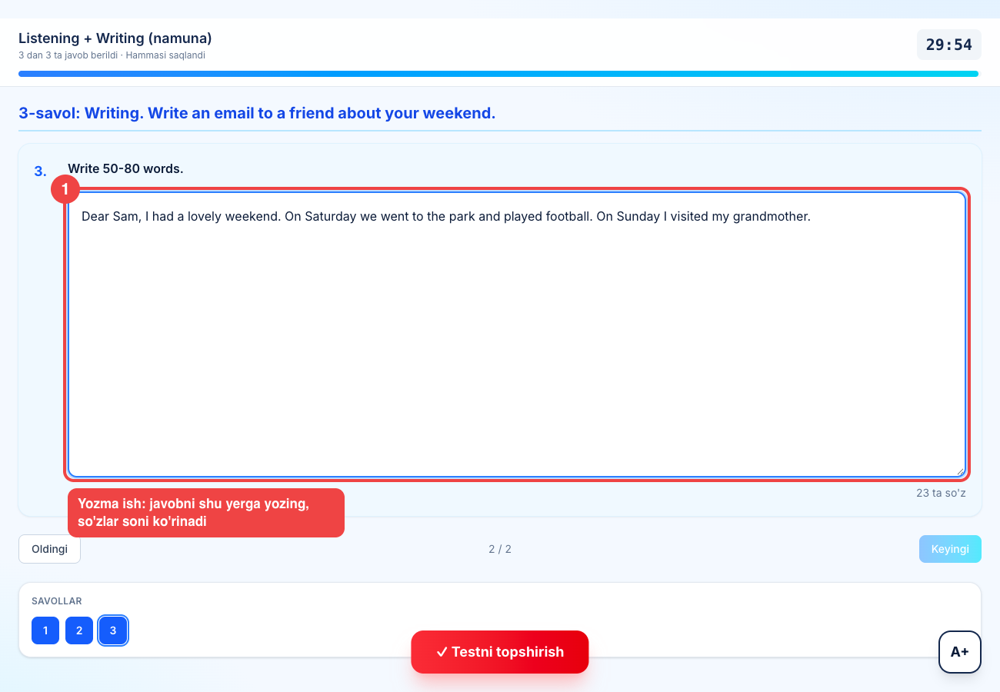
Topshirgandan keyin
O'quvchi imtihonni topshirgach, test qismi darhol baholanadi, yozma qism «tekshirilmoqda» bo'ladi. Yakuniy natija, o'tdi/o'tmadi qarori, daraja tasdig'i yoki saralash taklifi faqat o'qituvchi ball qo'ygandan keyin chiqadi.
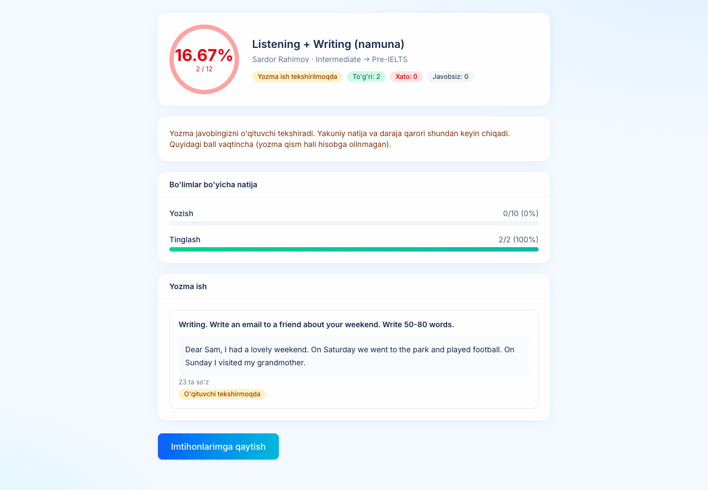
O'qituvchi ball qo'yadi
- Bosh sahifada «✍️ … ta yozma ish ballingizni kutmoqda» xabari chiqadi. Uni bosing, yoki Natijalar sahifasida «Yozma ish holati → Yozma ish ball kutmoqda» filtrini tanlang.
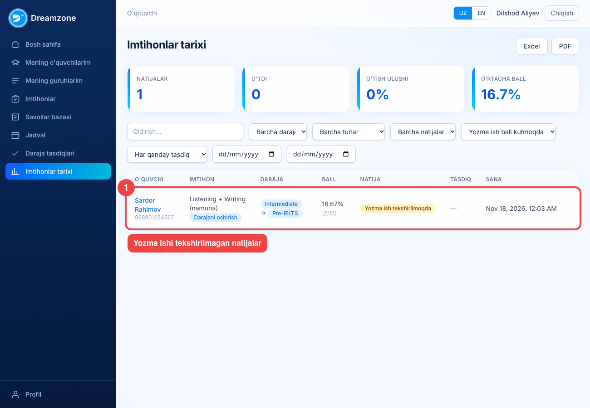
- Natijani oching. «Yozma ish» bo'limida topshiriq va o'quvchi yozgan matn turadi.
- Ball (0 dan eng yuqori ballgacha) va izoh yozing, «Ballarni saqlash» ni bosing.
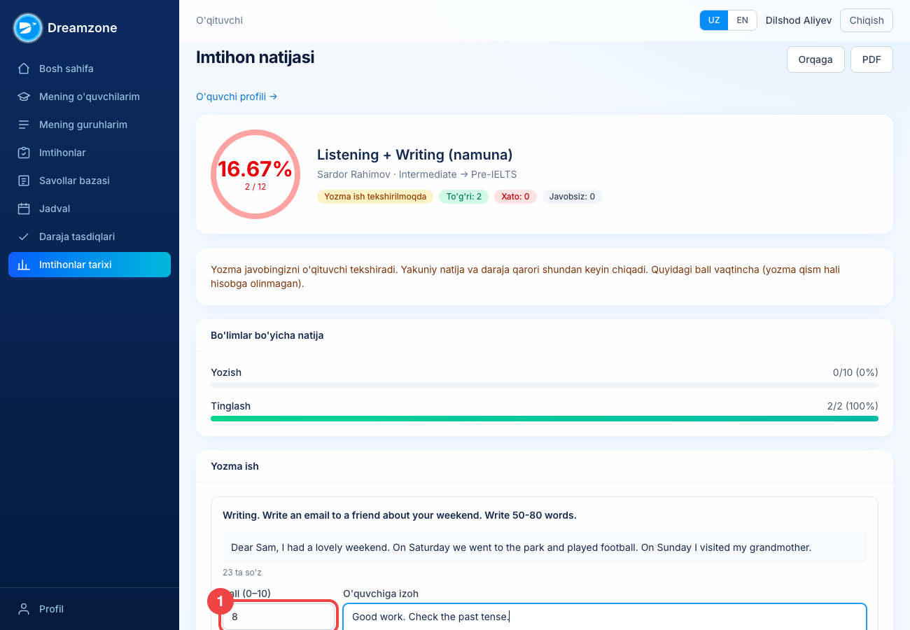
Resepshn: yangi o'quvchi testi
O'quvchi keldi, lekin uni ro'yxatga olish shart emas. Saralash testlari sahifasida:
- Test darajasini tanlang (ism va familiya ixtiyoriy).
- «Testni hozir boshlash» ni bosing. Test shu kompyuterda to'liq ekranda ochiladi, o'quvchi o'zi yechadi.
- Natija chiqadi. Past yoki yuqori balda tizim boshqa daraja testini taklif qiladi: «Ha, … ni topshiraman» yoki «Yo'q, yakunlash». Tugagach «Yakunlash va resepshnga qaytish» ni bosing.
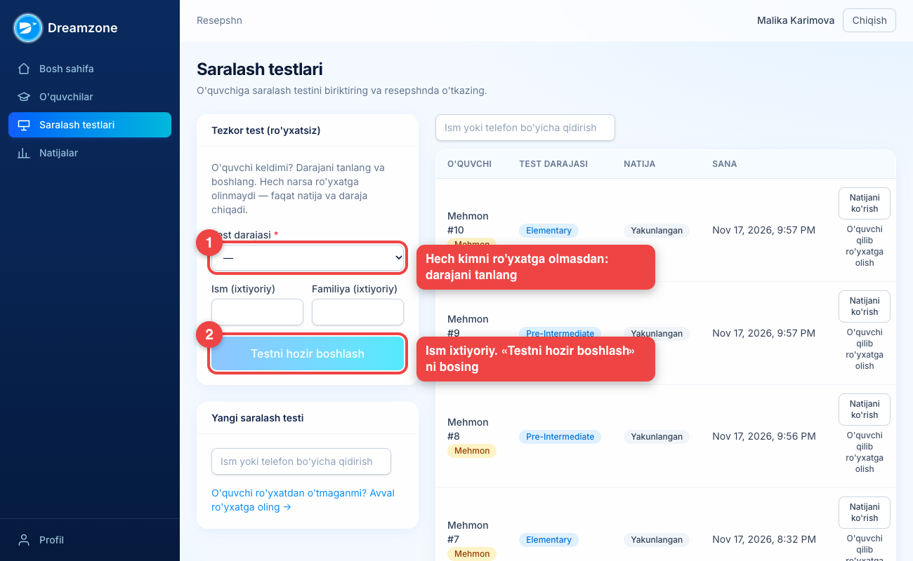
O'qituvchi
1 O'z o'quvchilarini qo'shish
Mening o'quvchilarim → + O'quvchini ro'yxatga olish. Ism, familiya, telefon, boshlang'ich daraja va o'z guruhingiz tanlanadi. Saqlagach login va parol bir marta ko'rsatiladi.
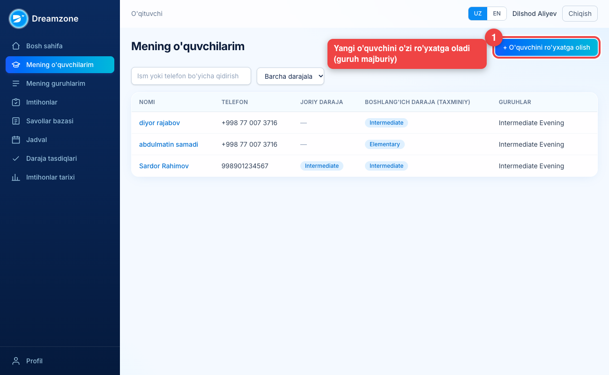
2 Mavjud o'quvchini guruhga qo'shish
Mening guruhlarim → guruhdagi A'zolar → qidiring → Qo'shish. Qidiruvda faqat hali hech qaysi guruhda bo'lmagan o'quvchilar chiqadi.
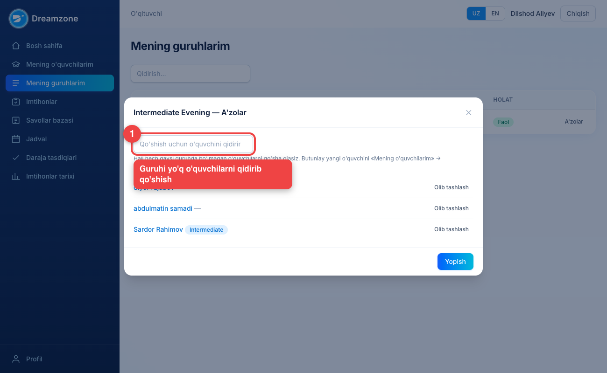
3 O'quvchining login va parolini berish
Mening o'quvchilarim jadvalida har bir o'quvchining logini ko'rinib turadi (odatda telefon raqami). Parolni ko'rsatish uchun o'quvchi qatoridagi «Login va parol» tugmasini bosing: tizim yangi parol yaratadi va uni login bilan birga ko'rsatadi. Chop etish tugmasi bilan qog'ozga chiqarib o'quvchiga berasiz.
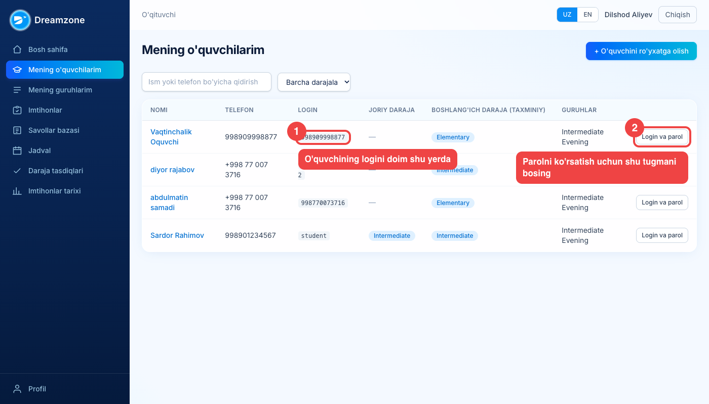
4 Imtihonni biriktirish
Imtihonlar → imtihonni oching (e'lon qilingan bo'lishi shart) → Biriktirish tabi:
- Guruhni yoki alohida o'quvchilarni belgilang.
- Variantni tanlang (Tasodifiy yoki aniq variant) va kerak bo'lsa boshlanish/tugash vaqtini qo'ying.
- Biriktirish ni bosing. Pastda hisobot chiqadi: nechtasiga biriktirildi va kim nega biriktirilmadi.
5 Darajani tasdiqlash
O'quvchi imtihondan o'tsa, natija Daraja tasdiqlari bo'limiga tushadi. Natijani oching, ko'rib chiqing va Tasdiqlash (daraja oshadi, tarixga yoziladi) yoki Rad etish (daraja o'zgarmaydi) ni bosing.
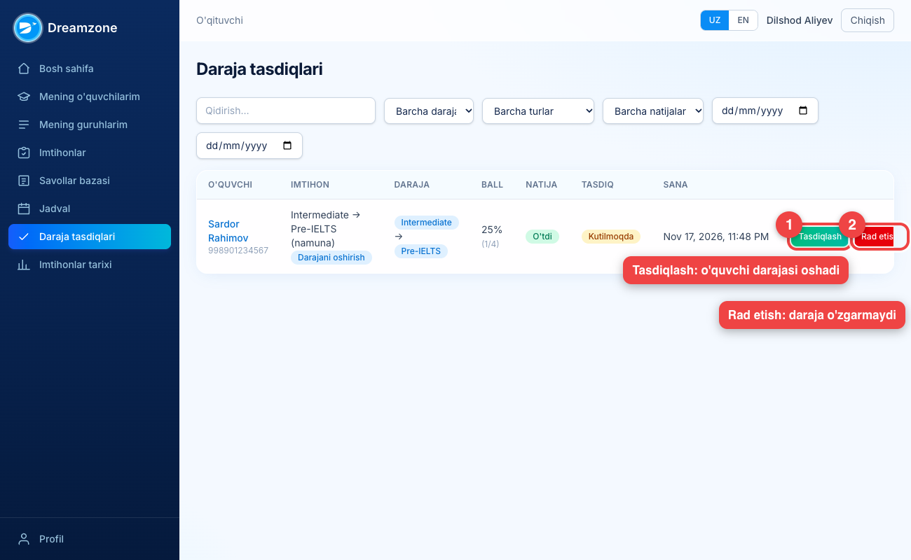
O'quvchi: imtihon topshirish
1 Imtihonni toping
Mening imtihonlarim sahifasida sizga biriktirilgan imtihonlar turadi. «Ko'rsatma va boshlash» ni bosing.
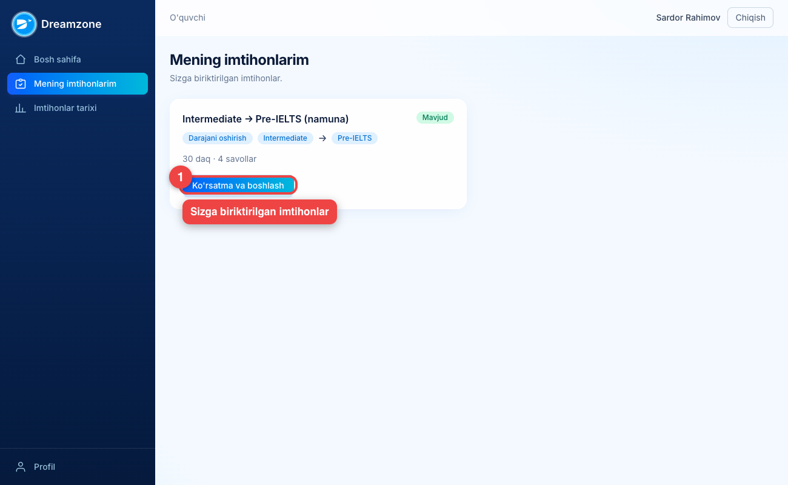
2 Ko'rsatmani o'qing va boshlang
Davomiylik, savollar soni va o'tish bali ko'rsatiladi. Imtihon faqat bir marta topshiriladi, qayta topshirish yo'q.
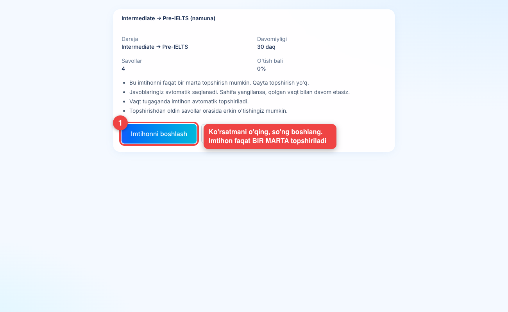
3 Savollarga javob bering
Tepada qolgan vaqt. Bo'sh joyli gaplarda javobni gap ichiga yozasiz, tanlov savollarida tugmani bosasiz. Javoblar o'zi saqlanadi. Savollar orasida Oldingi / Keyingi yoki pastdagi raqamlar bilan yurasiz. A+ harf o'lchamini kattalashtiradi.
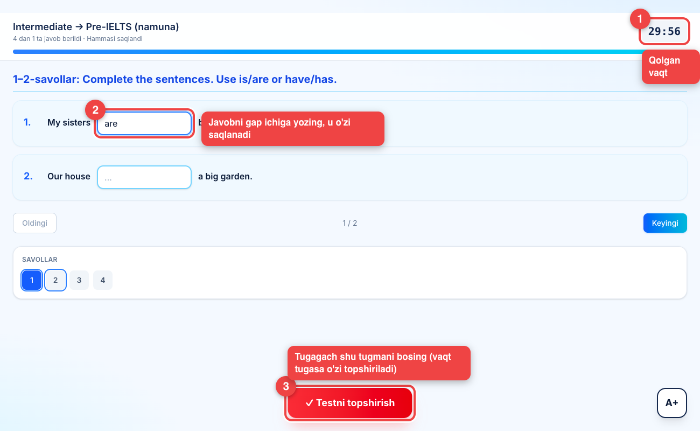
4 O'qish matni
O'qish savollarida matn chapda, savollar o'ngda turadi. Matnni o'qib, TRUE / FALSE (yoki NO INFORMATION) ni tanlaysiz yoki javob yozasiz.
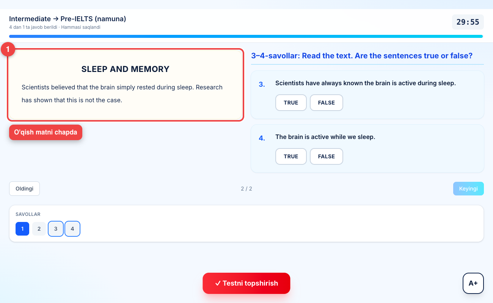
5 Topshirish va natija
Tugagach pastdagi qizil «Testni topshirish» ni bosing va tasdiqlang. Vaqt tugasa, imtihon o'zi topshiriladi. Natijada foiz, to'g'ri/xato soni va bo'limlar bo'yicha ball ko'rinadi. Darajani oshirish imtihonida natija o'qituvchi tasdig'ini kutadi.
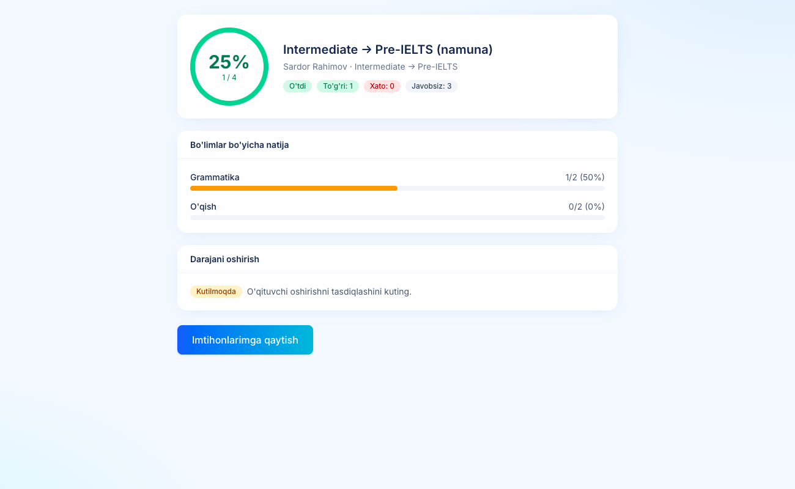
6 To'liq ekran rejimi
Imtihon butun ekranni egallaydi: faqat savollar, vaqt, savol raqamlari va topshirish tugmasi ko'rinadi. «Imtihonni boshlash» bosilganda brauzer to'liq ekranga o'tadi.
To'liq ekrandan chiqsangiz yoki boshqa oynaga o'tsangiz, ekranda 10 soniyalik hisoblagich chiqadi. 10 soniya ichida «To'liq ekranga qaytish» ni bosing, imtihon davom etadi. Qaytmasangiz imtihon to'xtatiladi, javoblaringiz saqlanadi va siz «Mening imtihonlarim» sahifasiga qaytasiz. U yerda holat «O'qituvchi tasdig'ini kutmoqda» bo'ladi.
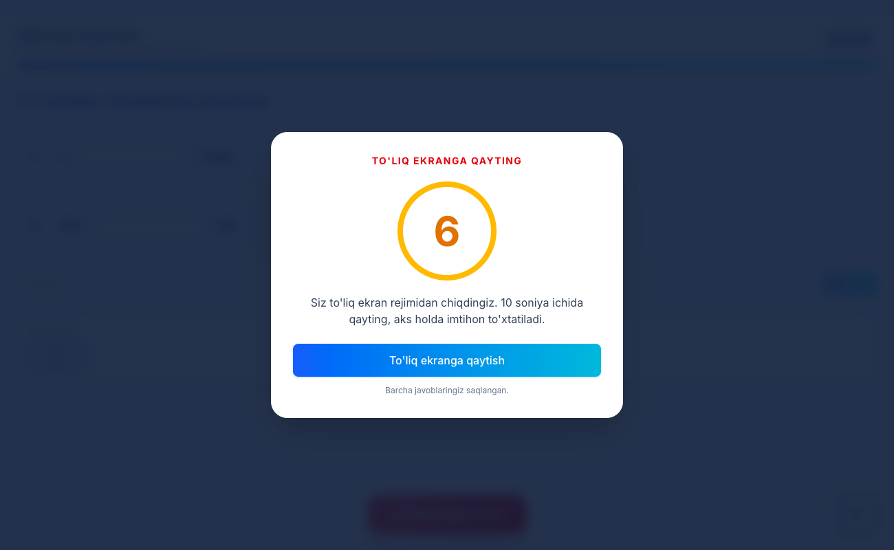
O'qituvchi «Daraja tasdiqlari» sahifasining tepasida to'xtatilgan imtihonlarni ko'radi va tanlaydi: «Davom etishga ruxsat» (o'quvchi qolgan vaqt bilan davom etadi) yoki «Saqlangan javoblar bilan yakunlash». Hisoblash serverda bajariladi, brauzerni almashtirib aldab bo'lmaydi.
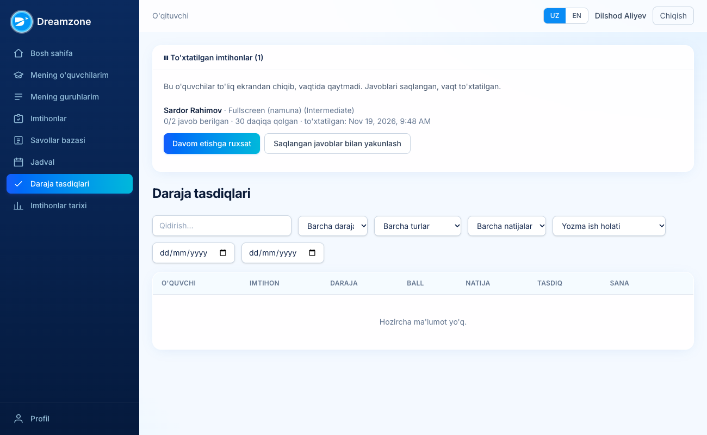
Brauzer to'liq ekranni qo'llamasa (masalan, ba'zi telefonlar), imtihon boshida va davomida ogohlantirish chiqadi, imtihon esa to'xtatilmaydi.
Tez-tez uchraydigan savollar
Yozma ishning natijasi chiqmayapti
Yozma qismni o'qituvchi tekshirmaguncha yakuniy natija chiqmaydi. Bosh sahifadagi «yozma ish ballingizni kutmoqda» xabari yoki Natijalar → «Yozma ish ball kutmoqda» filtri orqali toping va ball qo'ying.
«Matn tashlash» tugmasi ko'rinmayapti
Imtihonni allaqachon kimdir topshirgan bo'lsa, u qulflanadi va savol qo'shib bo'lmaydi. Variant yaratilmagan bo'lsa, avval «+ Variant qo'shish» ni bosing.
Imtihon o'qituvchi sahifasida yo'q
Admin yaratgan imtihon o'qituvchiga avtomatik ko'rinmaydi. Imtihon → Sozlamalar → «Kirish huquqi bor o'qituvchilar» orqali bering.
«Biriktirish» hech kimga biriktirmadi
Sabablari: imtihon e'lon qilinmagan; o'quvchilarning darajasi imtihon darajasiga mos emas; guruh bo'sh. Hisobotda har bir o'tkazib yuborilgan o'quvchi va uning darajasi ko'rsatiladi.
O'quvchi parolini unutdi
Admin yoki resepshn: O'quvchilar → «Parolni tiklash». Yangi parol bir marta ko'rsatiladi.
Imtihon noto'g'ri tuzilib qolsa
Savollarni topshirishlar boshlanishidan oldin tuzating. Topshirilgandan keyin savollar qulflanadi, shuning uchun yangi imtihon yarating.
O'quvchining darajasi noto'g'ri belgilandi
Admin: O'quvchilar → o'quvchini oching → «Darajani o'zgartirish». Hamma o'zgarishlar daraja tarixida saqlanadi.
Serverni qanday ishga tushiraman?
Terminalda ./run.sh, so'ng brauzerda http://localhost:5173 ni oching. To'xtatish: Ctrl+C.